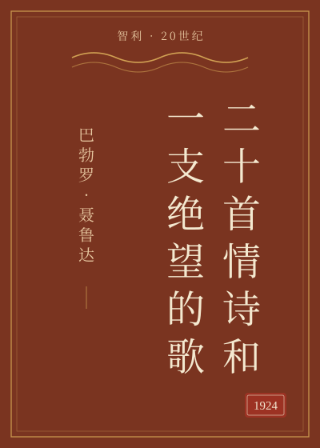
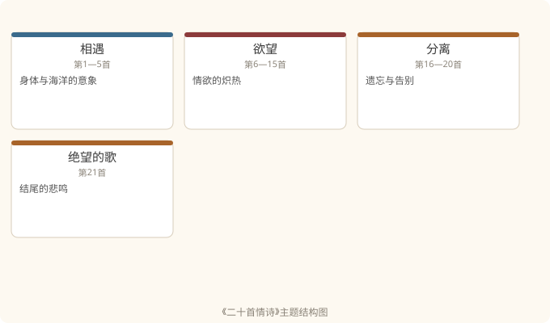

二十首情诗和一支绝望的歌
一、基本信息
| 作者 | 聂鲁达 |
|---|---|
| 成书/出版 | 1924年出版（Britannica） Pablo Neruda — Encyclopaedia Britannica（百科全书） |
| 国别/地区 | 智利 |
| 时代 | 现当代 · 20世纪 |
| 体裁 | 诗集 |
| 语言 | 西班牙语 |

《二十首情诗》主题结构图（主题·结构图）
二、创作背景
出版（Britannica）：1924年——作者19岁时发表（Britannica：Twenty Love Poems and a Song of Despair (1924), which made him famous）——拉美情诗的经典。
'为了让我的灵魂寻找你的方向'：以身体意象（'你的乳房像白色蜗牛'等——通说待核）书写青春期情爱——争议与普及并存（通说）。
三、内容脉络
二十首情诗：从相遇、欲望到分离与遗忘的完整弧线；每晚以'绝望的歌'作结（通说）。
名句：'我要在你身上做春天对樱花树做的事'（'Puedo escribir los versos más tristes esta noche'开篇——'今夜我可以写最悲哀的诗句'——原文意，通说待核）。
四、主要人物表
| 人物 | 身份 | 说明 |
|---|---|---|
| '我'（青年恋人） | 诗人·热情者 | 以身体与海洋写爱欲的青年 |
| '你'（她） | 恋人 | '白色蜗牛'般的身体意象（通说） |
五、主题与艺术特点
- 青春情欲：以身体意象书写爱欲——拉美诗歌的'情色'突破（通说）。
- 海洋与身体：'你的身体……像白色的鲸鱼'（原文意，通说待核）——海洋/鲸鱼/蜗牛意象链。
- 艺术特点：超现实前奏（通说待核）——口语与比喻的融合。
六、影响与评论
- Britannica（Neruda 条）：Twenty Love Poems and a Song of Despair (1924), which made him famous。
Pablo Neruda — Encyclopaedia Britannica（百科全书） - 全球最畅销的西语诗集之一（通说待核）——翻译成几乎所有主要语言。
Pablo Neruda — Encyclopaedia Britannica（百科全书）
七、阅读建议
难点
- 身体意象的坦率——以诗而非色情读之。
- 西语原文的音乐性——中译难以复制。
- 赵振江译《二十首情诗和一支绝望的歌》（北京大学出版社，通说待核）。
- 英译：W.S. Merwin（通说待核）。
通读20首+歌 → 精读第1首、第15首、第20首 → 对照聂鲁达《一般之歌》的政治转向。
八、待核实
- 1924年 Nascimento 出版（圣地亚哥说，通称）细节待核。
- 赵振江译本信息待核。
- '今夜我可以写最悲哀的诗句'逐字核对照赵振江译本。
本页主要来源
聂鲁达的其他收录作品：二十首情诗和一支绝望的歌一般之歌住所